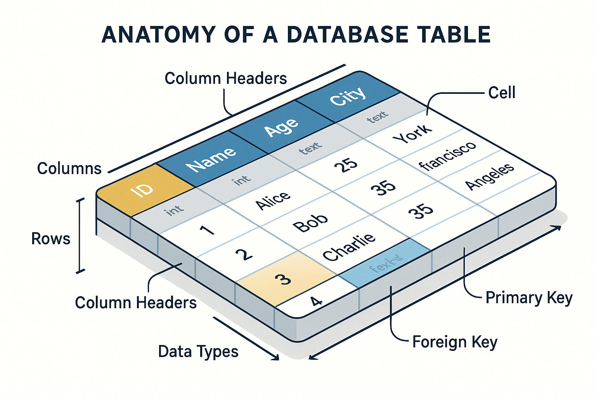

Aprenda Banco de Dados — do básico ao avançado
Trilhas práticas com o porquê e o como usar. Compare SGBDs e aplique IA (janela de contexto e RAG) no seu fluxo de dados.

Trilhas
Iniciante
Fundamentos, modelagem e SQL essencial. Sempre com contexto: por que e como usar.
Acessar trilhaAvançado
Arquiteturas, desempenho, particionamento, analítico vs transacional e governança.
Acessar trilhaComparativos
Entenda diferenças entre bancos relacionais, documentos, chave‑valor, colunares, grafos, séries temporais e busca. Escolha com base em objetivo, consistência, escala e custo.
Ver comparaçãoGerência de Informações
Três formas de tratar dados: estruturada, não estruturada e vetorial (RAG). Veja exemplos e quando usar cada uma.
Ver classificaçãoIA aplicada a dados
Por que usar IA: acelerar consultas, sumarizar dados, construir chat sobre base de conhecimento e guiar decisões.
Como usar: escolha certa da janela de contexto e uso de RAG com vetores para escalar além do limite do modelo.